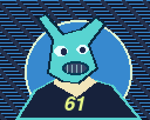
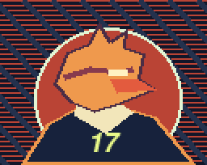
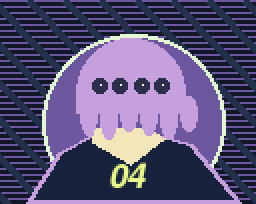

GUS B. PRESENTS• Section 8C, Crater Court

ILBA COLLECTORS SERIES
Wax pack, series one
Three cards and a strip of gum. The gum has qualified for the Europa Slip bench.
61 / C


Vee Sump
Vacuum Cleaners- Rebounds
- 19.4
A suction-forward out of Mare Imbrium. Vee once pulled down a rebound, both shoelaces, and a loose filling from seat 8C. Only the rebound counted.
Keeps every game ball in a labeled dust bag.
17 / G


Puck Basalt
Comet Tails- Hang time
- 41 hrs
Quarried on a Tuesday. Joined the league on a Thursday. Puck shoots with enough backspin to bring the ball home eventually.
The only player charged for overnight parking on a layup.
04 / F


Gee Whillik
Europa Slip- Assists
- 11.2
Four eyes, zero peripheral vision. Gee makes every pass by reading the reflection in the opposing coach’s visor.
Insists on being introduced in alphabetical order, one eye at a time.